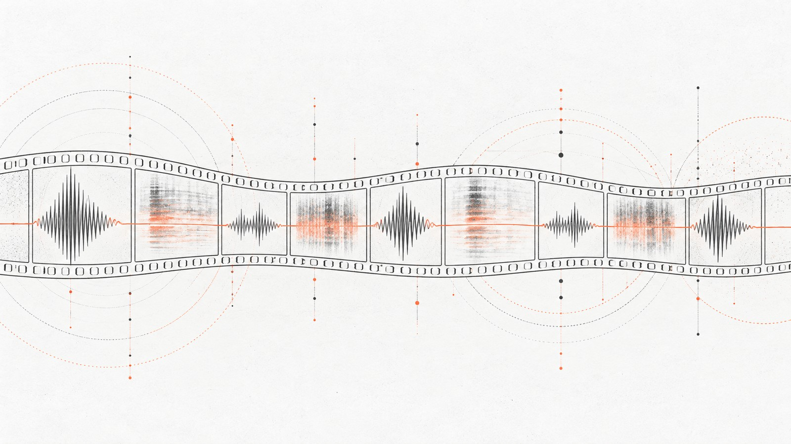

Movies and Video That Are Heard, Not Only Seen
Most video understanding treats sound as an afterthought, if it treats it at all. Our line of work starts from the opposite assumption, and has for fifteen years: for a great many questions about video — is this scene violent, are these two films alike, what is the style of this shot — the audio is not a supporting signal but the discriminative one.
Fusion, not decoration
Our audio-visual fusion work on detecting violent scenes in video remains the most widely cited result of this line. The same logic carried into movie content similarity, where textual, auditory and visual information together outperform any of them alone, and into representing films through topics extracted from their subtitles.
Structure, style and sentiment
More recent work looks at form rather than content: classifying film shot types from camera movement styles, with an accompanying open dataset, and analysing photographic style with convolutional networks. On the multimodal side, MMATR is a lightweight approach to multimodal sentiment analysis based on tensor methods, presented at ICASSP. Summarizing user-generated video — where there is no script, no edit and no structure to lean on — is the hardest case of all.
What is current
The tooling is maintained and open: multimodal_movie_analysis extracts audio and visual features from a film, and the movie shot classification dataset is published for reuse. The natural continuation of this line is generation, where the same multimodal understanding is what makes control possible.
Selected publications
- Audio-visual fusion for detecting violent scenes in videos 2010 doi
- Enhanced movie content similarity based on textual, auditory and visual information. Expert Systems with Applications 96 (2018): 86-102. doi
- Multimodal Summarization of User-Generated Videos Applied Sciences, 11(11), 5260. (2021) doi
- Content Representation and Similarity of Movies based on Topic Extraction from Subtitles Proceedings of the 9th Hellenic Conference on Artificial Intelligence. ACM (2016) doi
- MMATR: A Lightweight Approach for Multimodal Sentiment Analysis Based on Tensor Methods ICASSP 2023-2023 IEEE International Conference on Acoustics, Speech and Signal Processing (ICASSP) (pp. 1-5). IEEE doi
- Film Shot Type Classification Based on Camera Movement Styles Iberian Conference on Pattern Recognition and Image Analysis (pp. 602-615) (2022) doi
- Photography Style Analysis using Convolutional Neural Networks 2022 SITIS. IEEE doi